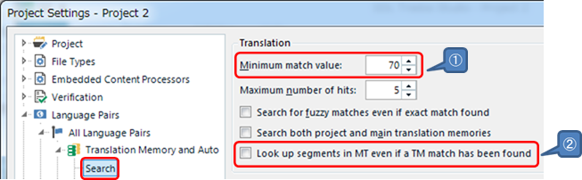

Trados Settings
This addin is not reflected settings on the Trados
enough now.
But it is described below about the parts that
settings are reflected.
Whenever we
receive some requirements,
we respond to
those.
Project Settings > Language Pairs > (any pare)
> Translation Memory and Automated Translation
> Search

① In the case searching
TM,
retrieve similar
sentences having a score
more than or
equal to
specified value.
The
smaller the
value,
the more differ translations
from original texts are retrieved.
② If isn't
checked,
auto translation texts are
retrieved
just in the case
retrieving no similar texts.
If
is checked,
auto translation texts
are retrieved
no matter whether
similar texts are retrieved or
not.
This setting is reflected to
the time to retrieve translation.